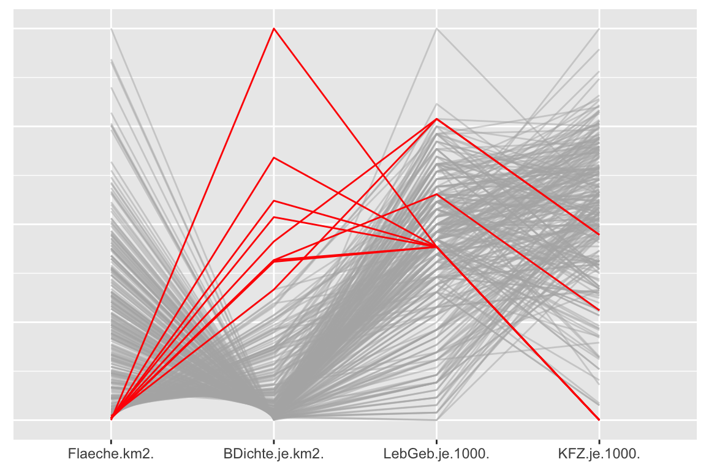
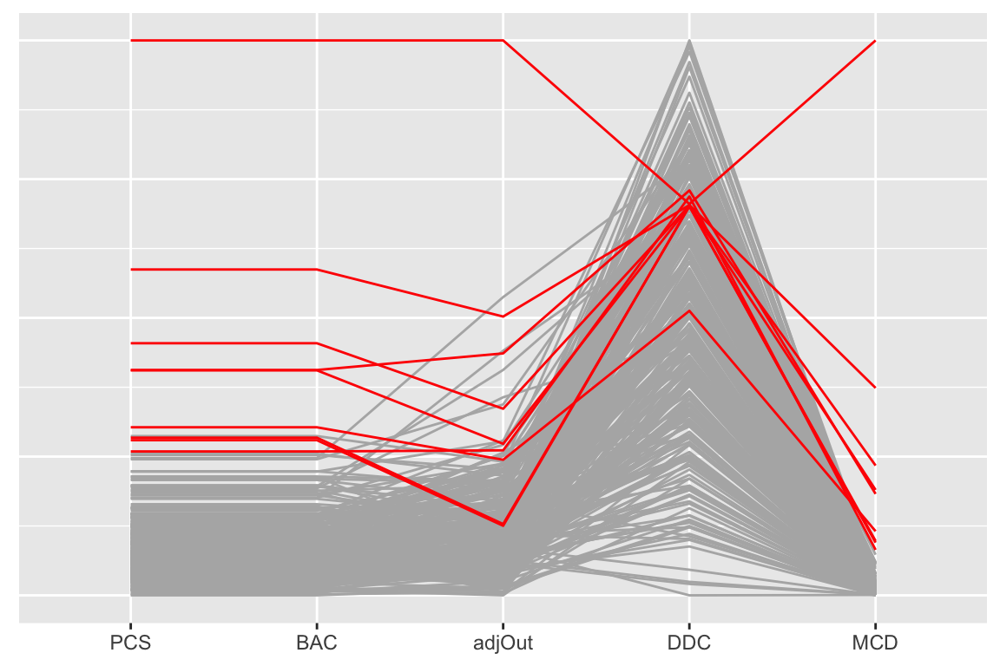

PCPsO3.RmdTwo parallel coordinate plots are drawn by the OutliersO3 package to complement the main O3 plot, one of the dataset with all outliers highlighted and one of outlier distances with either all outliers highlighted (O3plotM) or the outliers found for the strictest tolerance level highlighted (O3plotT). This vignette shows you how to draw these parallel coordinate plots with different sets of cases highlighted.
Consider again the Election2005 dataset used in the other vignettes and create a new binary variable defining the cases you are interested in. The first example selects the outliers identified for the complete dataset and then uses the code from the O3plotM function for drawing a pcp of the data.
# Prepare O3plot results library(OutliersO3) data(Election2005) data <- Election2005[, c(6, 10, 17, 28)] O3p <- O3prep(data, method=c("HDo", "PCS", "BAC", "adjOut", "DDC", "MCD")) O3p1 <- O3plotM(O3p) #Create and add the new highlighting variable to the dataset ty <- O3p1$outsTable %>% filter(Combination=="c1111") ouFx <- data ouFx$oh <- rep(0, nrow(data)) ouFx[ty$Case,"oh"] <- "A" #Use plotting code from O3plotM n1 <- ncol(data) ouFx <- ouFx %>% mutate(alev = ifelse(oh == 0, 0.5, 1)) gp <- ggparcoord(ouFx %>% arrange(oh), scale = "uniminmax", columns=1:n1, groupColumn="oh", alphaLines="alev") + labs(x = NULL, y = NULL) + scale_colour_manual(values = c("grey70", "red")) + theme(plot.title = element_text(size = 18, hjust = 0.5), legend.position = "none", axis.ticks.y = element_blank(), axis.text.y = element_blank()) gp
 Fig 1: A parallel coordinate plot of the four variables from the Election2005 dataset with the outliers highlighted that are identified for the whole dataset by at least one of the six methods. All nine outliers have a small area (Flaeche) and a high population density (BDichte).
The second example uses the same highlighting variable, but for highlighting the outlier distances pcp. Again the plotting code is taken from O3plotM.
mm <- c("HDo", "PCS", "BAC", "adjOut", "DDC", "MCD") #Create the dataset of distances and add the new highlighting variable from the first example Cx <- data.frame(O3p1$Cs[ , "c1111", ]) Cx$oh <- ouFx$oh colnames(Cx) <- c(mm, "oh") #Use plotting code from O3plotM if("HDo" %in% mm) { Cx <- Cx %>% select(-HDo) #HDo provides no distances } mx <- length(mm)-1*("HDo" %in% mm) gc <- ggparcoord(Cx %>% arrange(oh), scale = "uniminmax", columns=1:mx, groupColumn="oh") + labs(x = NULL, y = NULL) + scale_colour_manual(values = c("grey70", "red")) + theme(plot.title = element_text(size = 18, hjust = 0.5), legend.position = "none", axis.ticks.y = element_blank(), axis.text.y = element_blank()) gMethods <- gc + ggtitle(paste("Distances for each method with outliers highlighted")) gc
 Fig 2: A parallel coordinate plot of the outlier scores reported by the different methods (excluding HDoutliers, which does not calculate scores). Cases identified as outliers for the full dataset are highlighted. PCS and BAC give similar results.
Other highlighting variables might include highlighting for other combinations or highlighting for particular methods. Or you might want to explore the data with other graphical tools.